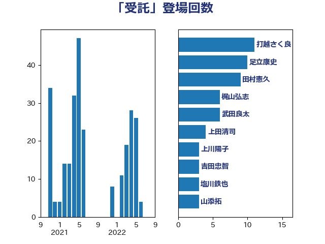

単語「受託」

| 打越さく良 | 立憲民主党 | 11 回 |
| 足立康史 | 日本維新の会 | 10 回 |
| 田村憲久 | 自由民主党 | 9 回 |
| 梶山弘志 | 自由民主党 | 6 回 |
| 武田良太 | 自由民主党 | 6 回 |
| 上田清司 | 国民民主党 | 4 回 |
| 上川陽子 | 自由民主党 | 3 回 |
| 吉田忠智 | 立憲民主党 | 3 回 |
| 塩川鉄也 | 日本共産党 | 3 回 |
| 山添拓 | 日本共産党 | 3 回 |
| 岸真紀子 | 立憲民主党 | 3 回 |
| 野上浩太郎 | 自由民主党 | 3 回 |
| 大島敦 | 立憲民主党 | 2 回 |
| 大西健介 | 立憲民主党 | 2 回 |
| 後藤茂之 | 自由民主党 | 2 回 |
| 末松信介 | 自由民主党 | 2 回 |
| 深澤陽一 | 自由民主党 | 2 回 |
| 片山大介 | 日本維新の会 | 2 回 |
| 牧島かれん | 自由民主党 | 2 回 |
| 蓮舫 | 立憲民主党 | 2 回 |
| 重徳和彦 | 立憲民主党 | 2 回 |
| 長妻昭 | 立憲民主党 | 2 回 |
| 中村裕之 | 自由民主党 | 1 回 |
| 中野洋昌 | 公明党 | 1 回 |
| 井上信治 | 自由民主党 | 1 回 |
| 井上哲士 | 日本共産党 | 1 回 |
| 伊藤孝恵 | 国民民主党 | 1 回 |
| 古川康 | 自由民主党 | 1 回 |
| 古川禎久 | 自由民主党 | 1 回 |
| 古賀之士 | 立憲民主党 | 1 回 |
| 古賀篤 | 自由民主党 | 1 回 |
| 国定勇人 | 自由民主党 | 1 回 |
| 大串博志 | 立憲民主党 | 1 回 |
| 大塚拓 | 自由民主党 | 1 回 |
| 大塚耕平 | 国民民主党 | 1 回 |
| 宮内秀樹 | 自由民主党 | 1 回 |
| 宮崎雅夫 | 自由民主党 | 1 回 |
| 小倉將信 | 自由民主党 | 1 回 |
| 小山展弘 | 立憲民主党 | 1 回 |
| 小林鷹之 | 自由民主党 | 1 回 |
| 小沼巧 | 立憲民主党 | 1 回 |
| 小野泰輔 | 日本維新の会 | 1 回 |
| 岡本あき子 | 立憲民主党 | 1 回 |
| 岩渕友 | 日本共産党 | 1 回 |
| 岸信夫 | 自由民主党 | 1 回 |
| 岸田文雄 | 自由民主党 | 1 回 |
| 川合孝典 | 国民民主党 | 1 回 |
| 斉藤鉄夫 | 公明党 | 1 回 |
| 本村伸子 | 日本共産党 | 1 回 |
| 森まさこ | 自由民主党 | 1 回 |
| 河野義博 | 公明党 | 1 回 |
| 滝波宏文 | 自由民主党 | 1 回 |
| 熊野正士 | 公明党 | 1 回 |
| 牧山ひろえ | 立憲民主党 | 1 回 |
| 矢倉克夫 | 公明党 | 1 回 |
| 石川香織 | 立憲民主党 | 1 回 |
| 稲津久 | 公明党 | 1 回 |
| 竹谷とし子 | 公明党 | 1 回 |
| 紙智子 | 日本共産党 | 1 回 |
| 舟山康江 | 国民民主党 | 1 回 |
| 萩生田光一 | 自由民主党 | 1 回 |
| 金子恭之 | 自由民主党 | 1 回 |
| 鈴木俊一 | 自由民主党 | 1 回 |